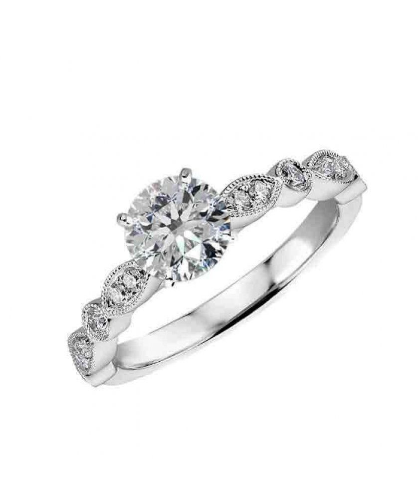

Welcome to žiedai
Meilės žiedai (1 Sezonas) / Kiraz Mevsimi (Season 1) (2014) » Filmai ir Serialai Internetu Nemokamai
2020.10.29 13:03Prisijungimas Registracija Pradžia Filmai Serialai Animacija TV laidos Filmas.tv Serialai Meilės žiedai (1 Sezonas) / Kiraz Mevsimi (Season 1) (2014)
Meilės žiedai (1 Sezonas)
Kiraz Mevsimi (Season 1)9-12-2018, 15:59 WEBRip Serijų: 159 Žiūrėti online 5,4 (880 balsų.) Metai: 2014 Šalis: Turkey Žanras: Serialai , Komedijos , Romantiniai Trukmė: 50min.. Aktoriai: Özge Gürel, Serkan Çayoglu, Nilperi Sahinkaya, Daghan Külegeç Kalba: Lietuvių (Profesionalus daugiabalsis dubliažas) Serialo „Meilės žiedai“ herojė Oiku nuo pat vaikystės myli savo geriausios draugės brolį Metę, tačiau jis tuo pačiu merginai neatsako ir žiūri į ją kaip į draugę. Oiku taip ir neranda drąsos atskleisti savo jausmų. Metė įsimyli savanaudišką Oiku draugę Seimą ir Oiku nelieka nieko kito tik pasiduoti. Tačiau jos keliai netikėtai susitinka su Metės geriausiu draugu ir verslo partneriu gražuoliu Aiaz, kuris ima akivaizdžiai rodyti simpatiją merginai. Tiesa, Aiaz garsėja kaip nepataisomas mergišius ir niekada neina į pasimatymą su ta pačia moterimi du kartus. Ar šie jausmai išlaikys išbandymus? Ar pavyks Oiku pamiršti savo vaikystės meilę ir atsiduoti naujai? Kaip Aiaz pavyks įsipareigoti ir nebebėgioti pas kitas moteris? Pridėta: Pilnas sezonas Playeris #2 Treileris Serija 1 LT Serija 2 LT Serija 3 LT Serija 4 LT Serija 5 LT Serija 6 LT Serija 7 LT Serija 8 LT Serija 9 LT Serija 10 LT Serija 11 LT Serija 12 LT Serija 13 LT Serija 14 LT Serija 15 LT Serija 16 LT Serija 17 LT Serija 18 LT Serija 19 LT Serija 20 LT Serija 21 LT Serija 22 LT Serija 23 LT Serija 24 LT Serija 25 LT Serija 26 LT Serija 27 LT Serija 28 LT Serija 29 LT Serija 30 LT Serija 31 LT Serija 32 LT Serija 33 LT Serija 34 LT Serija 35 LT Serija 36 LT Serija 37 LT Serija 38 LT Serija 39 LT Serija 40 LT Serija 41 LT Serija 42 LT Serija 43 LT Serija 44 LT Serija 45 LT Serija 46 LT Serija 47 LT Serija 48 LT Serija 49 LT Serija 50 LT Serija 51 LT Serija 52 LT Serija 53 LT Serija 54 LT Serija 55 LT Serija 56 LT Serija 57 LT Serija 58 LT Serija 59 LT Serija 60 LT Serija 61 LT Serija 62 LT Serija 63 LT Serija 64 LT Serija 65 LT Serija 66 LT Serija 67 LT Serija 68 LT Serija 69 LT Serija 70 LT Serija 71 LT Serija 72 LT Serija 73 LT Serija 74 LT Serija 75 LT Serija 76 LT Serija 77 LT Serija 78 LT Serija 79 LT Serija 80 LT Serija 81 LT Serija 82 LT Serija 83 LT Serija 84 LT Serija 85 LT Serija 86 LT Serija 87 LT Serija 88 LT Serija 89 LT Serija 90 LT Serija 91 LT Serija 92 LT Serija 93 LT Serija 94 LT Serija 95 LT Serija 96 LT Serija 97 LT Serija 98 LT Serija 99 LT Serija 100 LT Serija 101 LT Serija 102 LT Serija 103 LT Serija 104 LT Serija 105 LT Serija 106 LT Serija 107 LT Serija 108 LT Serija 109 LT Serija 110 LT Serija 111 LT Serija 112 LT Serija 113 LT Serija 114 LT Serija 115 LT Serija 116 LT Serija 117 LT Serija 118 LT Serija 119 LT Serija 120 LT Serija 121 LT Serija 122 LT Serija 123 LT Serija 124 LT Serija 125 LT Serija 126 LT Serija 127 LT Serija 128 LT Serija 129 LT Serija 130 LT Serija 131 LT Serija 132 LT Serija 133 LT Serija 134 LT Serija 135 LT Serija 136 LT Serija 137 LT Serija 138 LT Serija 139 LT Serija 140 LT Serija 141 LT Serija 142 LT Serija 143 LT Serija 144 LT Serija 145 LT Serija 146 LT Serija 147 LT Serija 148 LT Serija 149 LT Serija 150 LT Serija 151 LT Serija 152 LT Serija 153 LT Serija 154 LT Serija 155 LT Serija 156 LT Serija 157 LT Serija 158 LT Serija 159 LT +6 8 +6 8 Pažymėti filmą Užgesinti šviesą Pasidalinti su draugais! Pagrindinis skirtumas nuo kitų filmų svetainių yra patogus leistuvas filmo "Meilės žiedai (1 Sezonas)", kuris dirba su HD 720 arba 1080 kokybė, automatiškai prisiderina pagal jūsų interneto greitį! Neveikia ...
... Panašus filmai WEBRip Įsimylėjęs karalius (1 Sezonas) / Wangeun Saranghanda (Season 1) (2017) BDRip Vedybų planuotoja / The Wedding Planner (2001) BDRip Rudeninės svajos / Autumn Dreams (2015) WEBDL Ričis Didysis / Richard the Stork / A Storks Journey (2017) BDRip Fruitveilo stotis / Fruitvale Station (2013) BDRip Princesė de Montpensje / The Princess of Montpensier (2010) Pridėti komentarą Kol kas komentarų nėra. Būk pirmas! Komentarai (0) Pakomentuoti Informacija
Mielas lankytojau. Jūs čia esate kaip neregistruotas vartotojas.
Mes siūlome jums užsiregistruoti arba tiesiog prisijungti naudojant savo prisijungimo duomenis, tam, kad galėtum įkelti bei komentuoti norimas naujienas. Navigacija Žanrai Biografiniai Veiksmo Vesternai Kariniai Detektyviniai Mistiniai Trileriai Dramos Istoriniai Komedijos Romantiniai Kriminaliniai Muzikiniai Nuotykių Moksliniai Sportas Fantastiniai Siaubo Psichologiniai Dokumentika Šeimai Kalėdiniai Pagal metus 2020 2019 2018 2017 2016 2015 2014 2013 2012 2011 Pagal šalį Rusija USA Prancuzija Lietuva Turikija Indija Meksika Serialų atnaujinimai Mano vienintelė (1 Sezonas) Nuo spalio 29d. Mes (5 Sezonas) nauja 1 serija (lietuviški subtitrai) Puiki vieta (2 Sezonas) atnaujinta 12 serija (lietuviškas įgarsinimas) Šešėlių medžiotojai (2 Sezonas) atnaujinta 7 serija (lietuviškas įgarsinimas) Skorpionas (4 Sezonas) atnaujinta 11 serija (lietuviški subtitrai) Kidding (Season 2) atnaujinta 10 serija (lietuviškas įgarsinimas) Čikagos policija (5 Sezonas) atnaujinta 5 serija (lietuviški subtitrai) Balta - Meilės spalva (1 Sezonas) nauja 343 serija (lietuviškas įgarsinimas) Būk su manim (1 Sezonas) nauja 2168 serija (lietuviškas įgarsinimas) Juodvarnis (1 Sezonas) nauja 38 serija (lietuviškas įgarsinimas) Greitai matysite Artemis Faulas Žvaigždžių karai 9 Naujieji mutantai Kontaktai
